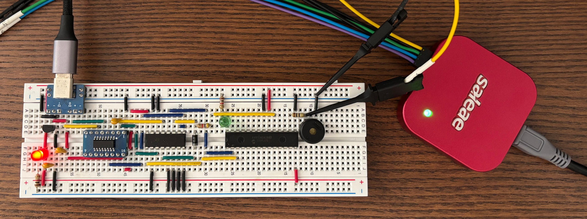
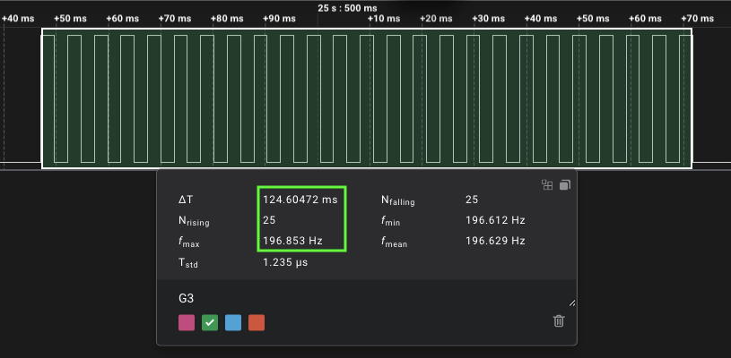
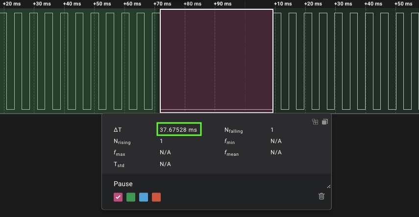

Tonos y melodías

Vamos a explicar desde cero cómo reproducir melodías usando tonos generados por un timer en un AVR128DA28. Los tonos serán reproducidor por un buzzer o altavoz piezoeléctrico. Para eso vamos a estudiar en profundidad una melodía muy famosa que la usa Arduino en su ejemplo. Te recomiendo mucho que uses un analizador lógico para no ir a ciegas.
Vamos a ir descomponiendo la melodía en notas y luego en tonos y así hasta llegar al código fuente que los genera. Es un ejemplo maravilloso donde se aplica ingeniería inversa, matemática y programación.
¿Qué es una melodía? Es una sucesión organizada de sonidos de diferentes alturas y duraciones, percibida como una sola entidad musical que desarrolla una idea. Los sonidos son representados por tonos.
Conectemos un analizador lógico (logic analyzer) a la salida del microcontrolador que reproduce dicha melodía para obtener una muestra de pulsos que se parecen a la siguiente imagen:

Estas son las notas y la duración de cada de la melodía. La primera línea son las notas, y la segunda los tiempos.
NOTE_C4, NOTE_G3, NOTE_G3, NOTE_A3, NOTE_G3, 0, NOTE_B3, NOTE_C4
4, 8, 8, 4, 4, 4, 4, 4
Si buscamos en la librería de tonos musicales que suele estar en un fichero llamado pitches.h obtenemos solo estas cuatro notas que conforman la melodía:
#define NOTE_G3 196
#define NOTE_A3 220
#define NOTE_B3 247
#define NOTE_C4 262
Tenemos a la mano toda la información para empezar a realizar los cálculos.
Note
Los valores decimales que se obtienen de los cálculos y los que se aprecian en las imágenes obtenidas por el analizador lógico no son exactos, hay un margen de error que se debe a múltiples factores.
Por ejemplo, la nota G3 tiene el valor 196, que corresponde a la frecuencia de 196 Hz.

Si observamos la imagen anterior, notamos que hay una serie de pulsos que los llamaremos toggle. Un toggle es un valor alto ó bajo. En la imagen anterior hay 49, y este valor se puede calcular usando la nota y el tiempo.
Volvamos analizar la nota G3 que está acompañada de un tiempo con el valor 8 que equivale a una corchea (jerga de la música), esto quiere decir, una duración de 1/8s es equivalente a 125ms.
Como resultado tenemos 49 toggles que es equivalente a 24.5 períodos, si redondeamos son 25 períodos. Todo empieza a encajar según lo que nos dice la imagen anterior.
Entre nota y nota se define un tiempo llamado pausa a partir de la siguiente formula:
El tiempo de la nota G3 es 8 y aplicando la formula, obtenemos 37,5ms como se muestra en la siguiente imagen:

Se han realizado los cálculos para la nota G3, estos pasos se debe repetir por cada nota hasta terminar la melodía. Hasta ahora se han identificado tres variables que son necesarias para poder programar; tms, tpause y toggles.
Para crear los pulsos de la forma deseada para cada tono vamos a usar uno de los timer/counter de varios que tiene el microcontrolador junto a las interrupciones, en específico el timer A (TCA) que tiene una resolución de 16-bit, quiere decir que el contador va desde el 0 hasta 65535 (216 − 1). Para entender su funcionamiento vamos a estudiar el modo NORMAL que es el que viene por defecto y es el más simple de comprender. Es importante saber que su funcionamiento y configuración es muy abstracto, por lo que voy a hacer el mejor esfuerzo al explicarlo.
counter overflow ISR
El ejemplo 2.9 muestra el código de configuración del timer/counter A (TCA) en modo NORMAL en la guia de migración que use para la función tone(uint32_t freq, uint32_t dur).
|
|
Sigo trabajando en mejorar y terminar el artículo…